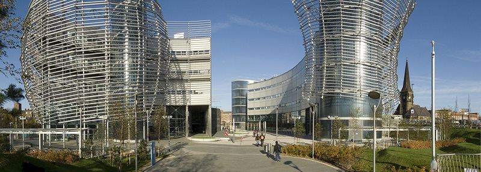

Acasă
Acasă Țări
Țări Catalog
Catalog Galerie foto
Galerie foto Experiente
Experiente Despre
DespreNorthumbria University



Descriere
Northumbria University se distinge prin cursurile de actualitate, dotarile deosebite si printr-o retea intinsa de parteneri. Acest lucru inseamna ca studentii au oportunitatea de a profita de tot ce le este necesar pentru a avea o cariera de succes. Prin educatie, Northumbria University transforma vieti si are un impact cultural si economic puternic.
Institutia cauta in mod constant noi metode de a provoca, de a inova, imbunatatii si de a avea o comunitate de cercetare infloritoare. Rezultatul este o reputatie in crestere pentru excelenta academica si de succes tot mai mare in tabelele nationale.
Northumbria este o universitate cu o reputatie la nivel mondial pentru excelenta academica, bogata in programe de cercetare si orientata spre afaceri. Ea este localizata in inima orasului Newcastle-upon-Tyne, care este votat in mod regulat cel mai bun loc in Marea Britanie pentru studenti.
Universitatea isi are originile in Colegiul Rutherford, fondat in 1880. Astazi, punand la dispozitia studentilor experiente remarcabile, programe de cercetare renumite si premiate la nivel mondial, Northumbria este un nou tip de universitate excelenta.
Northumbria este de top zece in Marea Britanie pentru numarul mare de absolventi care intra in angajare profesionala, iar noua din zece dintre absolventi lucreaza sau studiaza la sase luni de la absolvire. Universitatea este pe locul 21 din 111 de universitati din studiul Times Higher Education Student Satisfaction Survey.
Northumbria lucreaza cu angajatori majori, inclusiv Nike, IBM, Nissan, Procter & Gamble, BBC si NHS, in timp ce mai mult de 560 de angajatori și 60 de organisme profesionale, sponsorizeaza sau acrediteaza programele universitatii. Inovatoare si antreprenoriala, universitatea este de asemenea, clasata pe locul al patrulea in Marea Britanie pentru numarul de start-up-uri in randul absolventilor. De asemenea, ei lucrează in parteneriat cu alte institutii de invatamant superior din intreaga lume, atragand studenti din 136 de tari.
Incepand cu septembrie 2018, Northumbria University ofera 2 programe de masterat: Project Management si Business with International Business in campusul Amsterdam University of Applied Sciences.
Informații generale
Tara: Marea Britanie
Limba de predare: engleza
Ani de studiu: Bachelor: 3-4 ani; Master: 1-2 ani; MBA: 1 an
Inceput an: septembrie
Burse: Da
Campusuri: Northumbria
Aeroporturi: London Luton, London Stansted
Programe de studiu:
Bachelor
Design (Including placement, Undergraduate only)
Built and Natural Environment
Computing and Information Sciences
Science and Engineering
Psychology and Sport
Education, Health (including Nursing Science), Humanities, Law, Arts and Social Sciences
Physiotherapy, Occupational Therapy and Nursing Studies/Registered Nurse: Adult (All with clinical placement
Business
Graduate Diploma in Law (GDL)
Master
MSc Occupational and Organisational PsychologyBusiness
Design (Including placement, Undergraduate only)
Built and Natural Environment
Computing and Information Sciences
Science and Engineering
Psychology and Sport
Education, Health (including Nursing Science), Humanities, Law, Arts and Social Sciences
Physiotherapy, Occupational Therapy and Nursing Studies/Registered Nurse: Adult (All with clinical placement
MA Conservation of Fine Art
MSc International Sport Management
Bar Professional Training Course + Bar Standards Board Registration Fee
Law BPTC (LLM) Two Years + Bar Standards Board Registration Fee
Legal Practice Course + Law Society Registration and Enrolment Fees